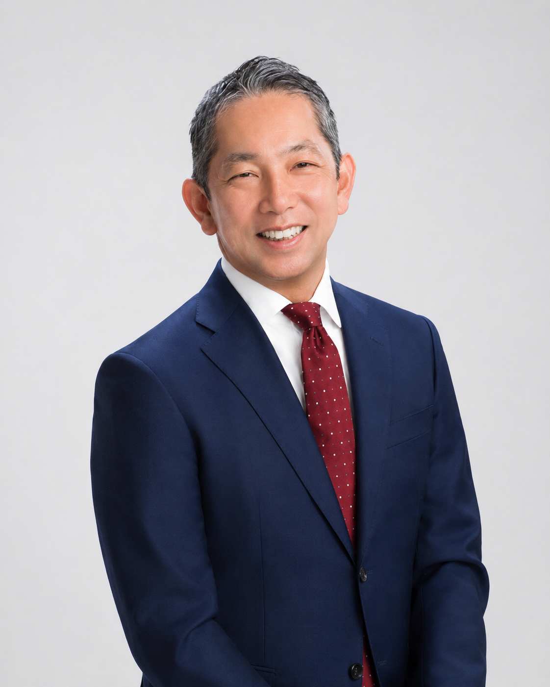

スタートアップ・成長企業支援
Startup & Growth
創業期から成長期まで、企業のステージに応じて変化する税務・会計・バックオフィスの課題に対応します。
FOR STARTUPS & GROWING BUSINESSES
Tax & Back Office, Built for Growth.
税務・会計だけでなく、バックオフィスの構築から企業の成長に応じた体制づくりまで。スタートアップ・成長企業の経営を、実務の側から支援します。
サービスを見る →02 / EXPERTISE
Our Expertise
税務・会計とバックオフィスの実務経験をもとに、創業から成長、上場準備まで、企業が次のステージへ進むための基盤づくりを支援します。
Startup & Growth
創業期から成長期まで、企業のステージに応じて変化する税務・会計・バックオフィスの課題に対応します。
Tax & Back Office
税務・会計に加え、クラウド会計の導入、経理フローの構築、月次決算、支払・納税、給与計算まで、創業期に必要な業務を一体的に支援します。
IPO Preparation
上場準備企業に対し、税務・会計上の課題整理や、企業の成長に対応したバックオフィス・管理体制の整備を支援します。
03 / KNOWLEDGE
Knowledge & Insights
会社を運営するうえで必要となる税務・会計やバックオフィスの知識を、実務の流れに沿って体系的に整理しています。
04 / SERVICES
Services & Pricing
必要な税務・会計、バックオフィスの体制は、事業内容や組織規模によって異なります。税務・会計顧問を基本に、それぞれの企業に必要な業務を組み合わせてサポートします。
Tax & Accounting
日々の税務相談から月次決算、決算・税務申告まで、企業活動の基盤となる税務・会計業務を継続的にサポートします。上場準備企業については、税務・会計を中心とした上場準備上の課題にも対応します。
Back Office Support
クラウド会計の導入、経理フローの構築、記帳代行、支払・納税、給与計算など、創業期に必要となるバックオフィス業務を支援します。企業の成長に応じて、業務の内製化や他の専門家への移管も含め、適切な体制への移行をサポートします。
05 / PROFILE

Profile
Hirohisa Shimizu
税理士（登録番号 136938）
税理士法人G&Sソリューションズ 代表社員
税理士法人で税務実務を経験した後、上場準備企業2社の管理部門に勤務。シルバーライフでは取締役管理部長として管理部門の立ち上げに携わり、サンバイオでは経営管理部シニアマネジャーとして、上場準備から上場後まで管理部門全般の実務を経験しました。
監査法人・証券会社への対応、経理体制の構築、労務・社内規程の整備、開示、機関運営、株式事務など、企業の成長に伴って必要となる内部管理体制を、外部専門家ではなく事業会社の当事者として構築してきたことが、現在の支援の原点です。
独立後もこの経験を活かし、スタートアップを中心に、税務・会計だけでなく、創業期のバックオフィス業務の構築・運用から、企業の成長に応じた内部管理体制への移行までを支援しています。
現在の顧問先にも、上場企業やその子会社、監査法人とのやり取りが本格化した上場準備企業が多く含まれています。
Career
税務実務に従事。
上場準備の開始に伴い管理部門を立ち上げ。監査法人・証券会社への対応、経理体制の構築、労務・各種規程の整備など、内部管理体制の構築に従事。
上場準備から上場後まで、監査法人・証券会社への対応、開示書類の作成、経理体制の構築、労務・各種規程の整備、株主総会・取締役会の運営、ストックオプション管理を含む株式事務など、管理部門全般に従事。
開設。
設立・代表社員就任。
税理士法人G&Sソリューションズとの合併に伴い、代表社員就任。
06 / OFFICE & ACCESS
Office & Access
07 / CONTACT
Contact
税務・会計顧問、バックオフィス支援などのご相談はこちらからお問い合わせください。内容を確認のうえ、担当者よりご連絡いたします。